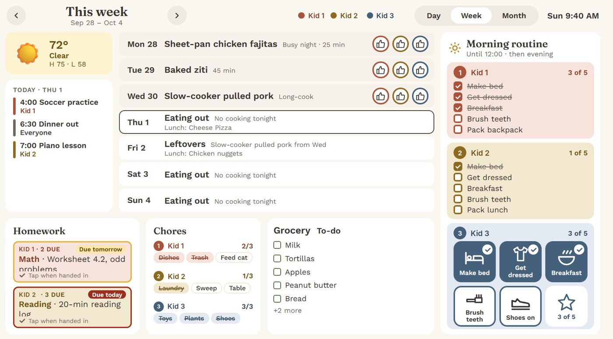
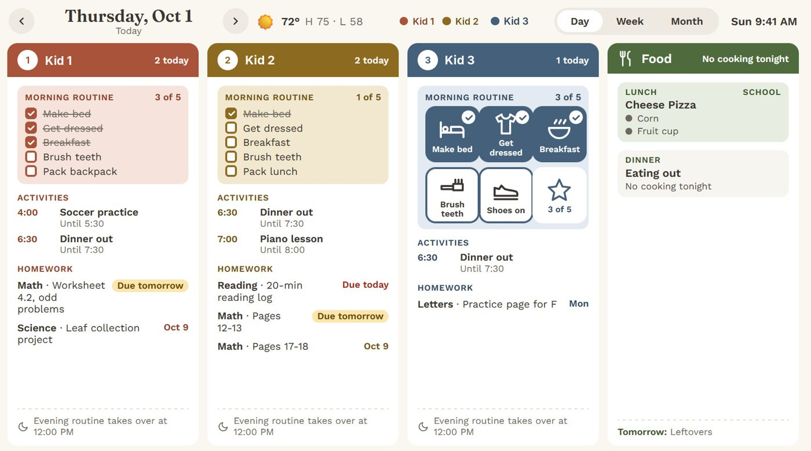
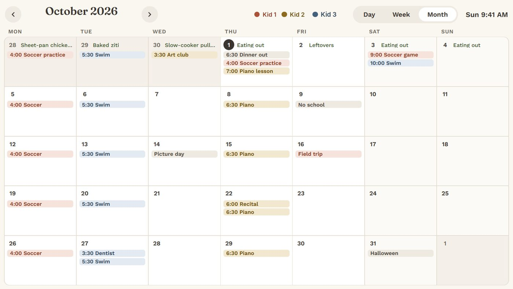

Home Base
A dinner-planning tool I built for my family turned into the touchscreen on our kitchen wall that everyone checks, and it changed direction three times on the way.

Why I started this
Dinner was the thing that wore us down. Every week it was the same loop: figure out what's in the house, guess which nights would be too busy to cook, and then scramble. So I set out to build a small app to plan the week in one sitting on Sunday. My first plan had a list of meals, a pantry list, tags for busy nights and long-cook nights, a loose field for cost, and a grocery list I could send to our delivery app. I wrote the whole plan up so I could show it to my wife before building anything.
It didn't stay that app. After the first demo, her feedback changed what mattered, and then living with it changed it again.
How it's made
What it runs on. A small web app on the Ubuntu server I already run at home, in Docker, with the data backed up to a NAS. The kitchen screen is an ordinary touchscreen PC showing a web page, with the family calendar open in a second browser tab. Nothing about our family lives in someone else's cloud. A few features do call out by design: the weather, the school's published lunch menu, our calendar link, and a package-tracking service.
How it got built. I planned it in conversation with Claude, turned the plan into a list of milestones, and had a coding agent build it one milestone at a time.
The path it took:
- The dinner planner. The first version was the Sunday ritual: tag each day (busy, normal, long cook, eating out, leftovers), look at suggested dinners, swap what you don't like, and lock the week. It ranks suggestions by what we haven't eaten lately and what the kids liked, and the kids tap a thumbs-up on dinners they enjoyed so those come back more often. The whole Sunday session takes about ten to fifteen minutes.
- Pivot one: the kitchen display. After the first demo, my wife's feedback changed what I focused on. I set the grocery list aside and made two things the headline: a shared screen for the kitchen, and school lunch menus pulled in automatically from the district's published menu, so each night's dinner sits next to that day's lunch. Two choices from that stage stuck. The kids tap their thumbs-up right on the shared screen with no "who are you" step, and the screen's only "kiosk mode" is a small fullscreen button, so the kitchen PC stays a normal computer.
- Pivot two: from a menu to the whole day. Once the screen was on the wall, the family started asking for things, and each feature exists because someone in the house wanted it. Each child got their own colour and their own morning and evening routines. Our five-year-old can't read yet, so her routine is big picture tiles she taps herself. Homework shows the most urgent item with a "Due today" or "Due tomorrow" nudge, and a child taps the box when they've handed it in. Then came repeating chores, shared lists anyone can tick off, our existing family calendar (read-only, so the display never changes it), and package tracking in plain words like "Out for delivery." There's a Day view with a lane per child, a Week view, and a Month view, and when nobody has touched it for a few minutes it turns into a photo slideshow.


- A side road I didn't take. I wanted a bus icon the kids could tap to see where the school bus is. The bus company has no public API, so I wrote it up as a separate experiment and kept it out of the app.
- Pivot three: the name. "Family Dinner Planner" stopped being accurate, so it's Home Base now.
Where it ended up. Version 1.1.0, in daily use in our house of five. There's no subscription for the app itself (the package-tracking service has its own free tier). It's still a working prototype from one family. It needs a small always-on computer at home, the school-lunch import is built around our own district's menu, and it isn't something to download yet.
Screenshots show demo data only, with the children's names replaced.
What I learned
- Show it early. One conversation with my wife changed the product more than anything I'd planned alone. The grocery list I'd put at the centre of my plan got set aside, and a shared screen for the kitchen took over.
- Let the people in the house ask for things. The best features all started as someone saying "can it also show..." after a week of using it.
- Design for the person with the least patience. A five-year-old with picture tiles, no logins, big touch targets and one fixed layout made it easier for the adults too. If something doesn't fit on a screen you can read from across the kitchen, it doesn't go on the screen.
- Suggestions beat rules. Dinner suggestions only work if you can ignore them, so any meal can be picked anyway.
- Not everything needs building. Live bus tracking and automatic grocery ordering both ran into services that don't offer what I'd need, and the app is better for the things I left out.
- Specific beats general, for now. Parts of it are tied to our school's menu and our class's homework document. Making it work for other families would take real work, so I'm asking relatives whether they'd want it before I decide.